협찬 한 건에 붙는 잡무
협찬 메일 한 통이 오면 할 일이 길게 이어져요. 진짜 협업 제안인지 콜드 메일인지 가리고, 금액·일정·수정 횟수·계약서·영상 활용 범위를 협상하고, 끝나면 입금 확인과 인보이스 발행까지 해야 해요. 영상 제작과는 상관없는 일이죠.
문제는 이런 메일이 하루에 수십 건 오는데, 대부분 협상하다 없던 일이 된다는 거예요. 들인 시간에 비해 남는 게 적어요. 그래서 발표자는 이 과정을 통째로 봇에 맡기고, 가장 중요한 결정만 자기에게 묻도록 했어요. 확실히 성사된 프로젝트에만 힘을 쓰려는 거예요.
아래 그림은 영상 전체에서 보여 주는 흐름을 한 장으로 모은 거예요. 점선으로 들어오는 둥근 칸이 사람이 직접 결정하거나 손대는 지점이고, 나머지는 Hermes가 읽고 정리하고 초안을 써요.
flowchart TB A["제안 메일 정리
답장 초안"] --> B["단가 협상 기록"] B --> C["캠페인 변경·일정 확인"] C --> D["계약서 위험 조항 뽑기
메일 합의와 비교"] D --> E["대본 초안·촬영 목록"] E --> F["브랜드 피드백 체크리스트"] F --> G["인보이스 PDF"] G --> H["입금 대기 추적
미입금 리마인더"] H --> I["협업 관리 스킬로 저장"] P1(["사람: 단가·최종 금액"]) -.-> B P2(["사람: 방향·업로드 날짜"]) -.-> C P3(["사람: 말투·영상 방향 수정"]) -.-> E P4(["사람: 은행 입금 내역 전달"]) -.-> H
작업 환경은 Hermes 웹 앱이에요. 여기서 대화하고, 결과를 확인하고, 반복할 절차를 스킬로 저장해요. 메일이나 다른 앱을 쓰려면 계정 접근을 하나씩 연결해 줘야 하는데, 이건 다른 봇들과 같아요. 설정 화면의 MCP(Model Context Protocol) Servers 칸을 보면 linear와 notion 두 서버가 ACTIVE 상태로 붙어 있고, 각각 38개, 28개 도구를 쓸 수 있어요.
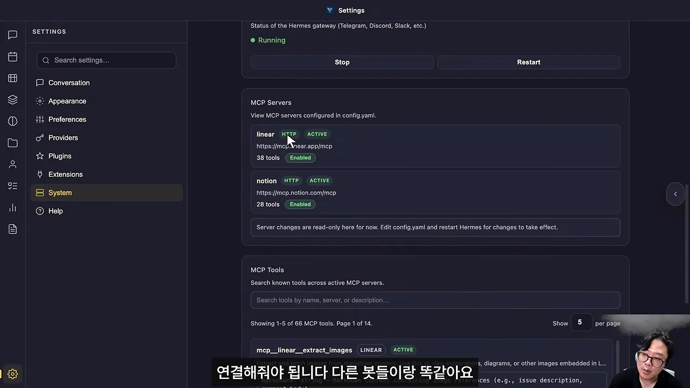
제안 메일 정리와 단가 협상
예시는 Artlist가 보낸 실제 협업 메일이에요. 형광펜이 칠해진 협업 내용 목록을 보면 캠페인은 Kling 4.0, 콘텐츠는 8분 이상 전용(dedicated) 영상 1편이에요. 맨 아래 비용 줄에서 희망 단가를 알려 달라고 하고, 상세 브리프는 '곧 공유드릴 예정'이라 아직 없어요.
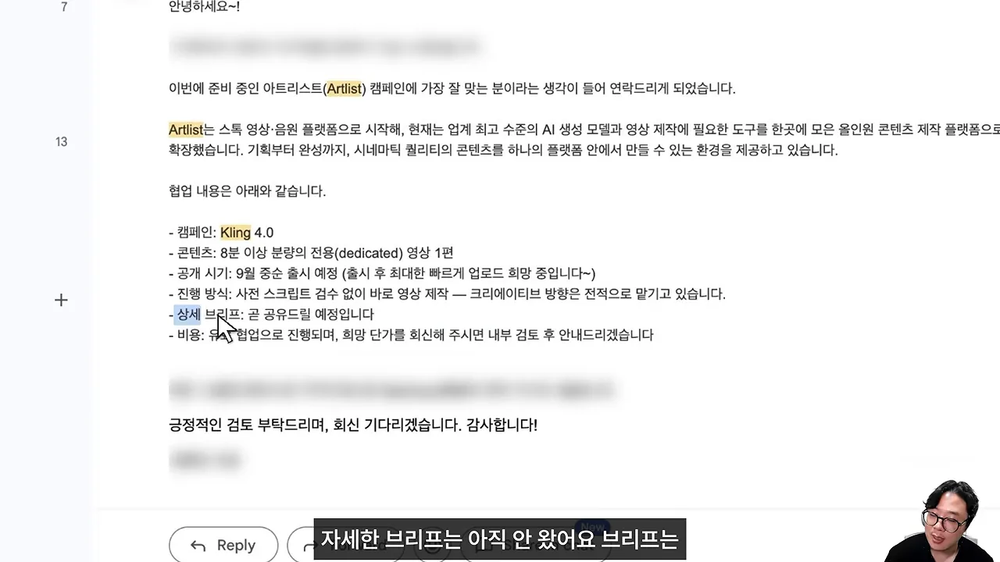
발표자는 이 메일을 통째로 Hermes에 넣고, 기본 단가가 10만 달러라고 가정해 알려 줘요. 실제 단가는 당연히 아니라고 밝혀요. Hermes에게는 영상 길이, 일정, 아직 확인되지 않은 브리프를 나눠 정리한 뒤 답장 초안을 쓰게 해요. 화면의 영어 답장 초안에는 USD 100,000 제안과 함께 일정과 상세 브리프를 달라는 문장이 들어가 있어요.
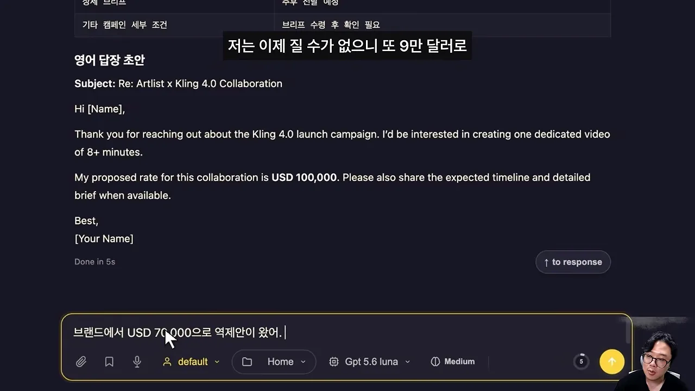
이어지는 협상은 이렇게 흘러가요. 10만 달러를 부르자 브랜드가 7만 달러를 제시하고, 발표자가 9만 달러로 다시 제안하자 브랜드가 8만 5천 달러로 마무리해요.
이런 메일은 한 스레드에서 여러 번 오가고, 여러 스레드가 동시에 진행돼요. 시간도 오래 걸려서 사람 기억으로는 따라가기 어려워요. Hermes에 기록을 맡기면 메일이 몇 번 오가도 제안 금액과 아직 정하지 않은 조건을 계속 정리해 둬요. 발표자는 나중에 Hermes가 정리한 브리프를 받고 답장을 정하면 돼요.
영상 뒷부분에서 이 협상 기록을 다시 열어 보는데, 최종 합의 금액 아래 '아직 확정되지 않은 조건' 표가 있어요. 영상 활용 범위, 수정 횟수, 게시일 세 줄이 모두 '미정'이에요.
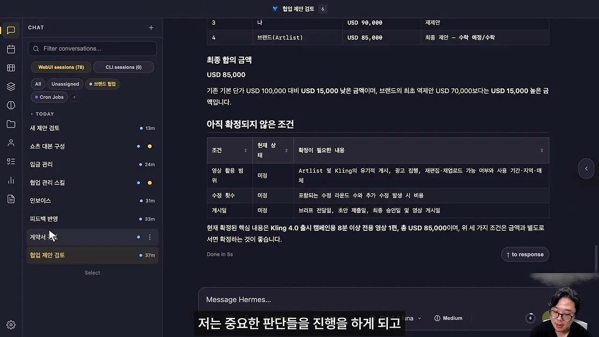
캠페인이 바뀌었을 때와 일정 맞추기
협상 기록을 남기는 이유가 하나 더 있어요. 다 협상해 놨는데 캠페인이 취소됐다는 메일이 오는 일이 꽤 많거든요. 대신 다른 두 방향 중 하나를 고르면 협업을 이어 가자고 제안하기도 해요. 후속 메일의 번호 목록을 보면 1번은 GPT(Generative Pre-trained Transformer) 6 Astra와 Fable 5.1 비교에 Seedance 2.5를 쓰는 안, 2번은 GPT 6 Astra와 Seedance 2.5만 다루는 안이에요.
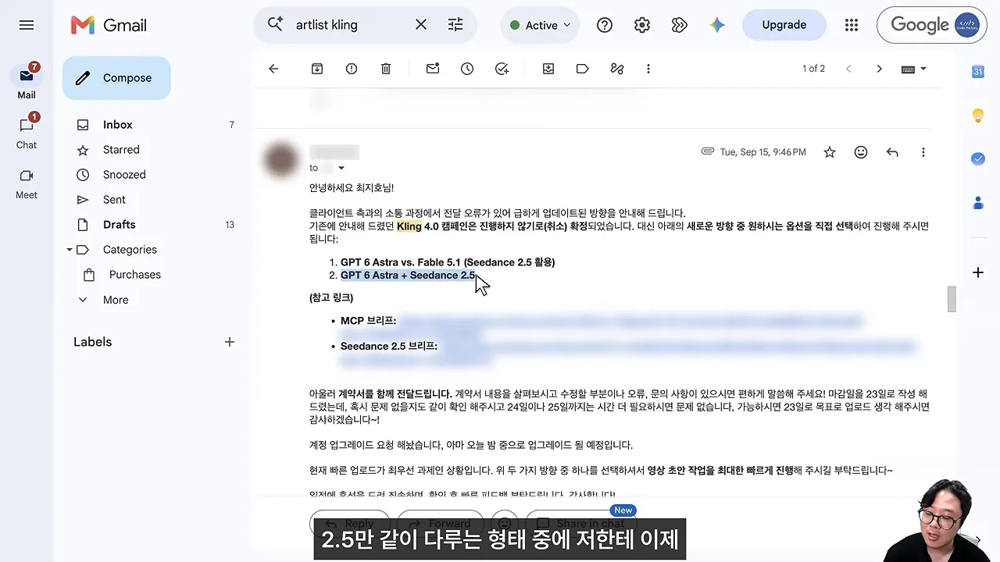
Hermes에게는 메일함을 열지 말고 붙여 넣은 내용만 기준으로, 처음 제안과 바뀐 점을 표로 정리하라고 해요. 계약서 게시일과 메일에서 가능하다고 한 날짜가 맞는지도 확인시켜요. 사람 실수일 수도 있지만, 일부러 불리한 조항을 넣는 경우도 있어서예요. 결과 표 첫 줄에 캠페인이 'Kling 4.0 출시 캠페인'에서 'Kling 4.0 캠페인 취소'로 바뀐 게 보여요.
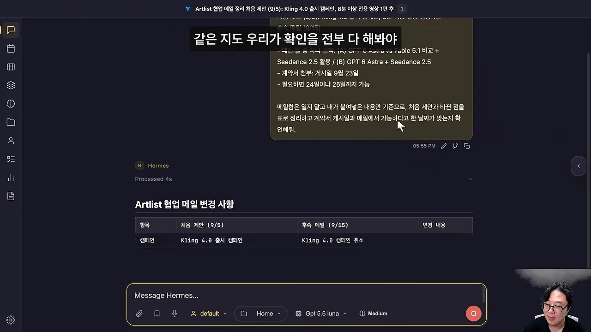
일정 확인은 캘린더를 직접 봐도 되지만, 발표자는 Linear나 Notion에 진행 중인 영상과 마감일을 저장해 두고 Hermes가 거기 들어가 확인하게 해요. Google 캘린더에서 촬영과 회의가 잡힌 시간도 읽어 와요. 화면 위쪽 '날짜 확인'에는 게시일 9월 23일, 연장 가능일 24·25일이 서로 모순되지 않는다는 결과가 있고, 입력창에는 캘린더 스크립트로 9월 16일부터 25일까지 바쁜 시간만 확인하라는 다음 지시가 들어가요.
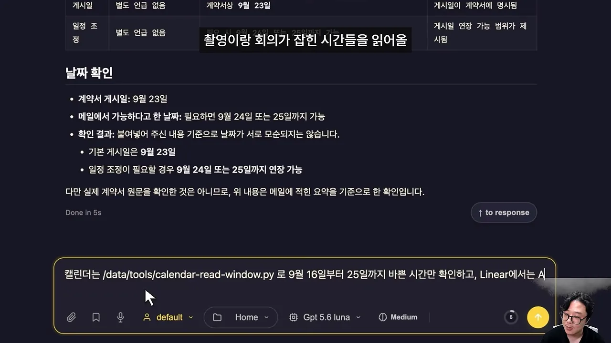
작업에 며칠이 필요하다고 가정하고, 남은 작업과 비어 있는 시간을 근거로 23·24·25일 중 언제까지 끝낼 수 있는지 계산하게 해요. 아래 '결론'에는 세 날짜 모두 가능하지만, 17·18·21일의 짧은 바쁜 시간을 조정하고 주말에도 작업한다는 전제가 붙어 있어요. 선택지가 나오면 Hermes가 결정을 요청하고, 발표자는 입력창처럼 "(B)안으로, 업로드는 24일"이라고 답해요.
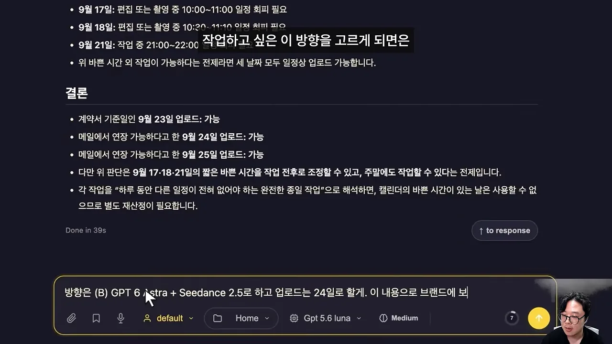
계약서는 어디부터 볼까요
여기까지 오면 협업이 거의 확정되는데, 이때 가장 중요한 게 계약서예요. 수십 페이지씩 오기도 하고, 다른 브랜드와 일하는 걸 과하게 막는 경쟁 금지 조항, 영상 권리를 넘기라는 조항, 무한 배상 책임 같은 조항이 들어 있기도 해요. 예시 계약서도 제4조(권리)에서 영상과 원본 소스의 모든 권리를 영구 양도하고, 제5조(경쟁)에서 게시 후 12개월간 경쟁 AI(Artificial Intelligence) 영상 서비스와의 협업을 막아요.
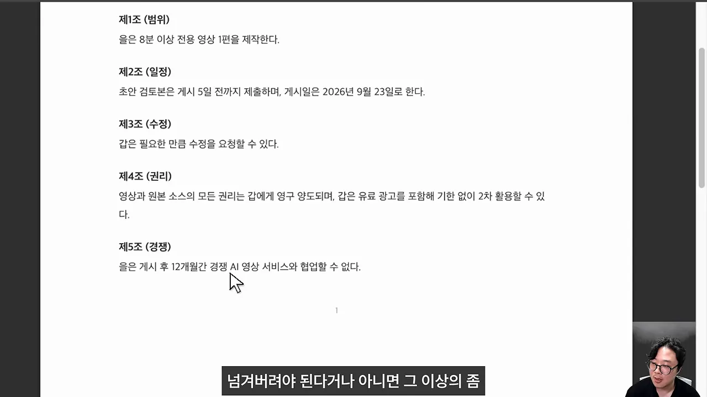
법을 모르는 사람이 매번 다 읽고 중요한 부분을 찾으려면 오래 걸려요. 게다가 여기까지 와서도 무산되는 일이 많아서, 다 읽고 판단할 수 있다 해도 그 시간이 낭비되기 쉬워요. 그래서 발표자는 먼저 확인할 조항을 골라 달라고 해요. 요청할 항목은 이래요.
- 다른 브랜드와 협업할 수 없는 제한이 있나요?
- 영상 저작권과 2차 활용 권리는 누구에게 있나요?
- 추가 금액은 어떻게 되나요?
- 수정은 몇 번까지 해 줘야 하나요?
- 대금은 언제 들어오나요?
- 어떤 경우에 금액이 깎이거나 계약이 끝나나요?
예시 계약서에서 Hermes가 짚어 낸 조항을 화면들에서 모으면 이래요.
| 확인 항목 | 예시 계약서에 적힌 내용 |
|---|---|
| 경쟁 제한 | 제5조: 게시 후 12개월간 경쟁 AI 영상 서비스와 협업 금지 |
| 저작권·2차 활용 | 제4조: 영상과 원본 소스의 모든 권리 영구 양도, 유료 광고 포함 기한 없는 2차 활용 |
| 추가 금액 | 계약서에 명시 없음 |
| 수정 횟수 | 제3조: 필요한 만큼 수정 요청 가능 |
| 감액 | 제6조: 게시가 늦어지면 하루당 5% 감액 |
| 해지 | 제7조: 갑이 사유 없이 해지할 수 있고, 해지 시 대금 미지급 |
| 배상 | 제8조: 을의 무제한 손해배상 |
위험한 조항마다 원문 위치를 함께 보고하게 하고, "계약서에 없는 내용은 추측하지 말라"고 꼭 덧붙여요. 결과 표는 확인 항목, 조항, 계약서 내용, 먼저 확인할 점 네 칸이에요. 표 위에는 제7조 해지·미지급, 제4조 저작권·2차 활용, 제5조 경쟁 제한, 제3조 수정 무제한을 서명 전에 명확히 하라는 요약이 있어요.
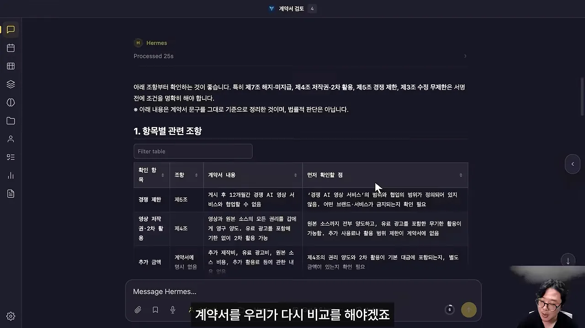
그다음 앞에서 주고받은 메일과 계약서를 다시 비교시켜요. 계약서는 보통 템플릿이라 스레드에서 합의한 내용이 빠진 경우가 많거든요. 결과는 일치하는 부분, 다른 부분, 브랜드에 먼저 물어볼 질문으로 나뉘어요. '다른 부분' 1번이 눈여겨볼 곳이에요. 메일에선 24·25일 업로드도 된다고 했는데 계약서엔 23일만 적혀 있어서, 늦게 올리면 제6조의 '하루당 5% 감액'에 걸릴 수 있다고 짚어요.
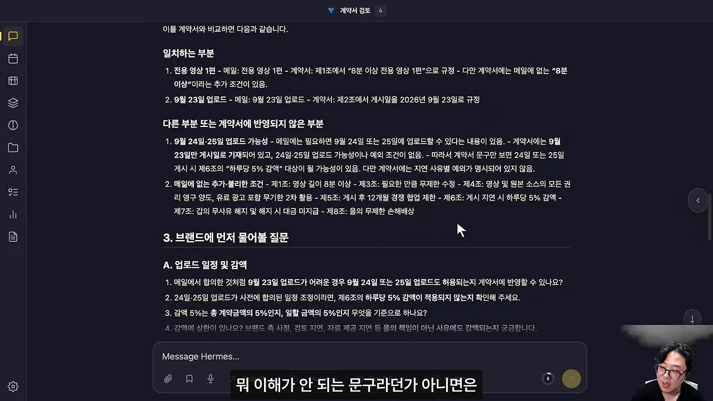
대본 작성과 브랜드 피드백 반영
계약 조건을 확인하고 서명하면 바로 제작에 들어가요. 그런데 제작을 시작할 때마다 제안 메일, 바뀐 방향, 브리프, 계약서를 다시 열어 빠진 요구 사항이 없는지 봐야 해요. 발표자는 이걸 컨텍스트 문제라고 해요. AI와 대화하며 콘셉트를 만들다 보면 브리프에서 조금씩 멀어질 수 있어서, 그걸 막아야 한다는 거예요.
예시는 Artlist MCP와 Seedance 2.5로 '세빛섬은 어떻게 물에 떠 있을까' 쇼츠를 만들고, 그 제작 과정을 본편에서 보여 주는 영상이에요. 입력창의 요청을 보면 확정 브리프의 필수 항목(Artlist MCP로 에셋 찾는 장면, Seedance 2.5 생성 결과, 설명란 상단 지정 링크와 문구)을 적고, 섹션 순서와 대본 초안을 짧게 만들라고 해요. 섹션마다 직접 촬영할 화면, 브랜드 필수 요소 위치, 게시 문구·링크 필요 여부를 표로 붙이고, 확인 안 된 결과는 '확인 필요'로 표시하라는 조건도 있어요.
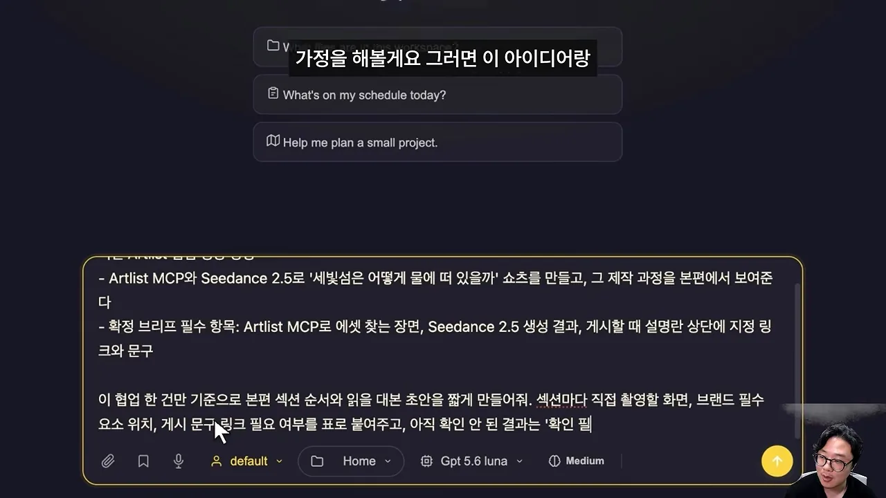
발표자는 대본 없이 찍을 때도 대본을 만들어요. 어떤 내용이 들어가면 좋을지 머리에 넣어 두면 중요한 포인트를 빼먹지 않거든요. B-roll과 실습 장면처럼 직접 찍을 부분도 대사와 함께 적어 달라고 해요. 결과 화면의 '읽을 대본 초안'은 오프닝, 영상 방향 소개, 원리 조사, Artlist MCP 에셋 검색, Seedance 2.5 프롬프트 작성 순서예요. 원리 조사 아래 '구체적인 부유 구조와 설명 자료는 확인 필요'라는 표시가 붙어 있어요.
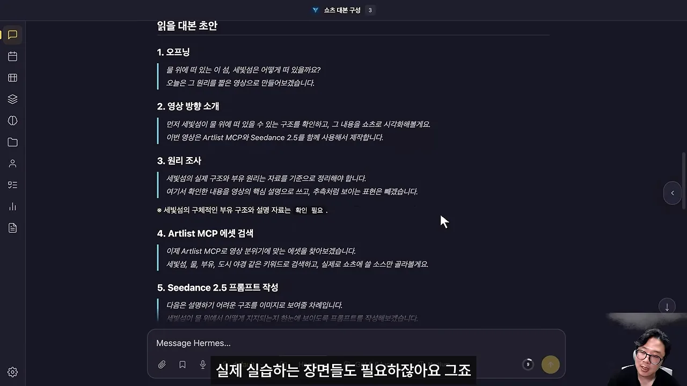
초안이 나오면 말투와 영상 방향은 발표자가 직접 고쳐요. 여기에 가장 많은 공을 들인다고 해요. 방향은 자기 머릿속에서 나와야 하고, 자기 캐릭터가 들어가야 영상이 잘 되기 때문이에요. 아래는 그렇게 손본 '세빛섬 쇼츠 대본' 문서예요.
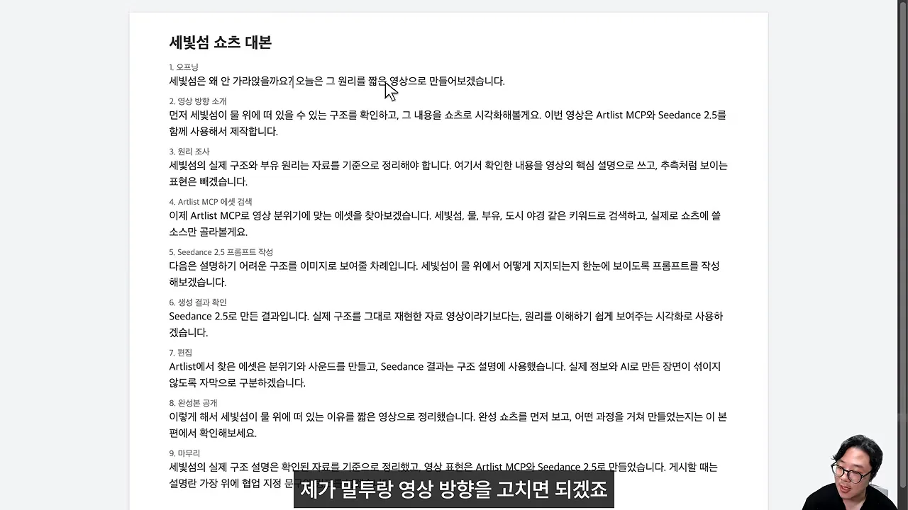
이렇게 하면 촬영할 대본과 준비할 화면 목록이 한 번에 정리되고, 바로 촬영에 들어가요. 완성본을 브랜드에 보내면 공개 전에 수정 요청이 오기도 해요. 메일의 1번은 제목과 썸네일에서 'Artlist' 언급을 빼 달라는 것, 2번은 설명란과 고정 댓글 상단에 문구와 링크를 넣어 달라는 거예요.
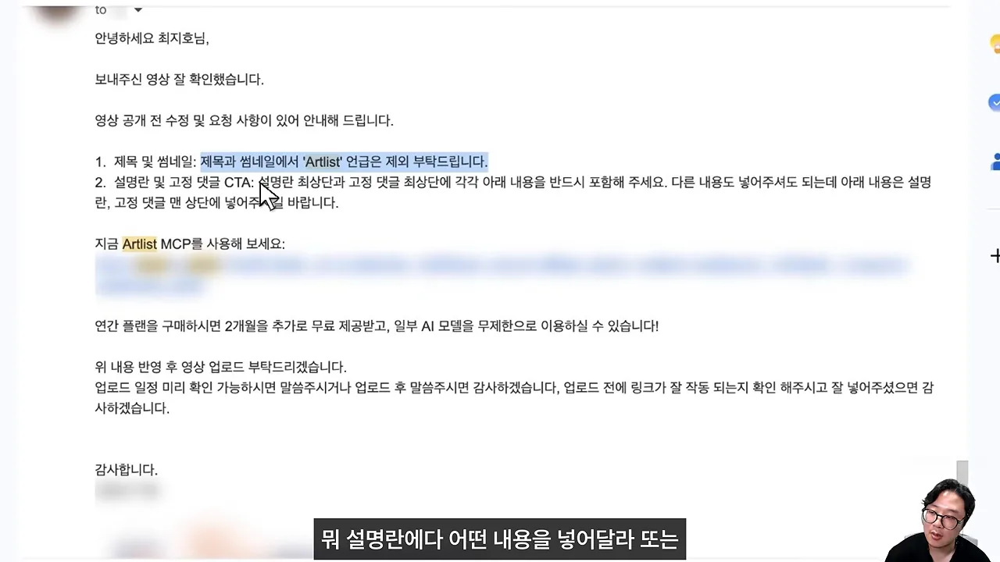
그래서 피드백과 기존 브리프를 같이 읽혀 제목, 썸네일, 설명, 고정 댓글, 링크 확인으로 할 일을 나눠 달라고 해요. 복사해서 붙여 넣기만 하면 될 정도로요. 실수를 더 줄이려면 원래 하기로 했던 것과 이번에 새로 추가된 요청을 따로 비교해 달라고 하면 돼요. 결과 화면의 '브랜드 회신' 체크리스트에 '설명란 상단 문구·링크는 기존 합의', '고정 댓글 문구·링크는 이번에 추가된 요청'이 나뉘어 있고, 아래에 업로드 일정을 담은 회신 초안이 있어요.
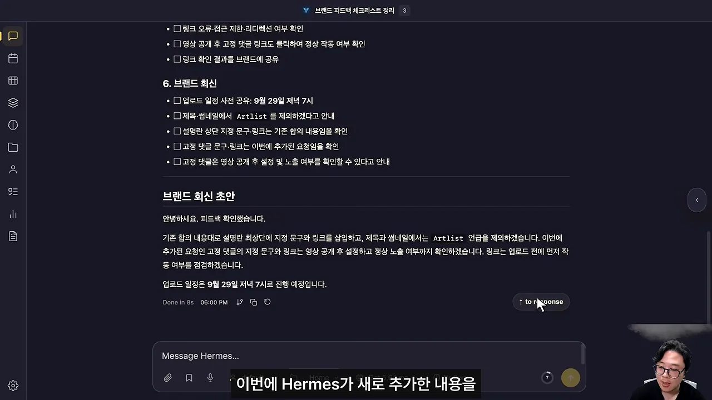
인보이스, 입금 확인, 미입금 팔로업
발표자는 영상을 납품한 뒤가 더 문제라고 해요. 협찬비는 대부분 플랫폼을 거치지 않고 송금으로 들어와서, 인보이스를 직접 발행해야 하거든요. 계약 조건과 청구 정보를 붙여 넣고 "우리 양식대로 인보이스 만들어 줘"라고 하면 Hermes가 PDF(Portable Document Format)를 만들어 줘요. 화면의 INV-102에는 발행일 2026-08-28, 지급기한 2026-09-27, 항목 '에이전트 튜토리얼 전용 영상 1편' USD(United States Dollar) 3,000이 들어 있어요.
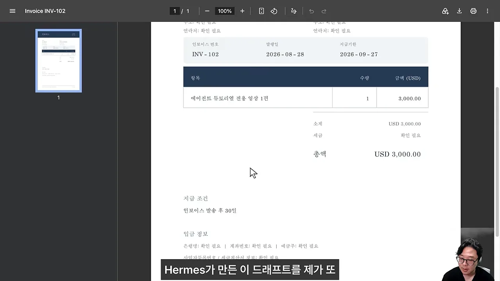
예전엔 정보를 다시 찾아 하나하나 넣느라 정말 귀찮았는데, 이제 스레드를 던져 주기만 하면 Hermes가 채워요. 보내고 나면 그 협업 상태를 '입금 대기'로 바꿔요. 이 기록은 Linear든 Notion이든 칸반보드든 상관없지만, 발표자는 Hermes와 독립된 외부 DB를 하나 두기를 권해요. 화면의 '협업 기록' 표는 브랜드, 영상, 인보이스, 발행일, 지급 조건, 지급 기한, 상태 일곱 칸이에요. 브랜드 A만 '입금 완료'이고 나머지 넷은 '입금 대기'예요.
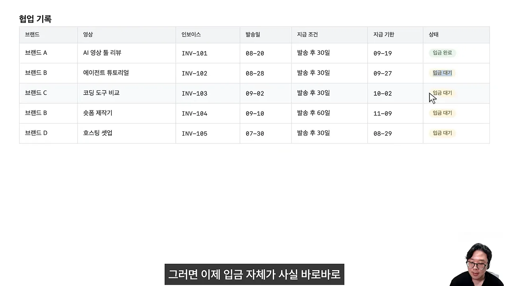
지급 기한은 60일 뒤, 30일 뒤, 다음 날로 제각각이고, 몇 달치가 쌓이면 기억이 안 나요. DB가 있으면 "지금까지 협업 중 입금 확인 안 된 것만 보여 줘"라고 묻기만 하면 돼요. 그 목록을 은행 입금 내역과 대조하면 돼요.
해외 은행은 API(Application Programming Interface)로 입금 내역이 자동으로 맞춰지는 것으로 안다고 해요. 한국 은행은 그게 안 돼서 이 부분은 발표자가 직접 확인해요. 한 달치 입금 내역을 보고 "어디서 얼마가 들어왔다"고 말하면 Hermes가 그 협업을 '입금 완료'로 바꾸고, 다음에 물으면 나머지만 알려 줘요. 상태가 바뀌는 흐름을 그리면 이래요.
stateDiagram-v2 direction LR [*] --> 입금대기: 인보이스 발송 입금대기 --> 입금완료: 사람이 입금 내역 전달 입금대기 --> 리마인더: 기한 3일 이상 지남 리마인더 --> 입금대기: 팔로업 메일 발송·기록 입금완료 --> [*]
아래 화면은 "브랜드 B의 INV" 입금을 알리기 직전이에요. 입금 대기 네 건이 표로 떠 있고, 이 중 하나를 입금 완료로 바꾸게 돼요.
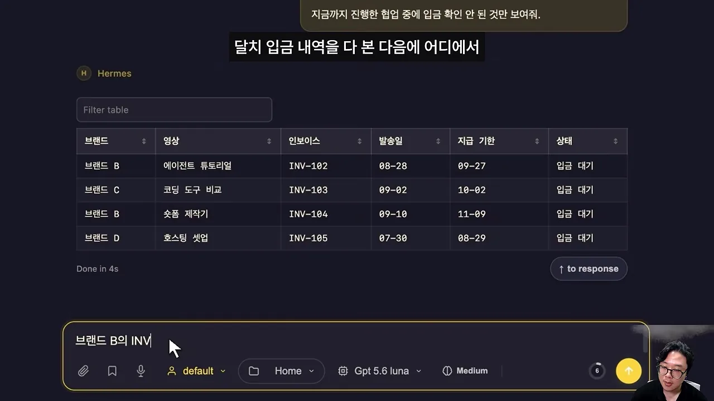
돈이 안 들어오는 경우도 많아요. 상대가 잊었을 수도 있고, 재촉해야 잘 주는 곳도 있어요. 그럴 땐 "지급 기한이 3일 이상 지난 것 전부 모아서 부드러운 리마인더 초안 써 줘"라고 하면 협업별로 맞춘 초안이 나와요. 아래 초안은 브랜드 D의 INV-105 건이에요. 하단 '제외된 건'에는 입금 완료된 INV-102와 아직 기한이 안 된 INV-103·104가 빠진 이유가 적혀 있어요.
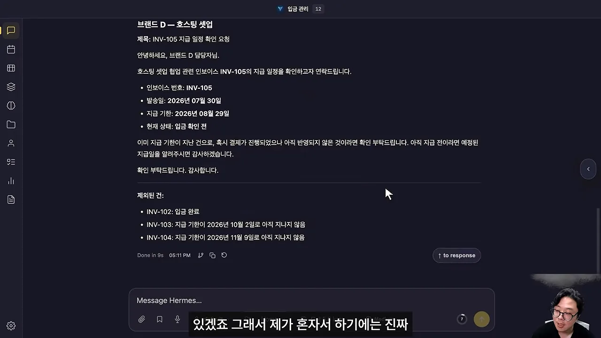
한 번 해 본 흐름을 스킬로
협업 한 건만 이야기했는데도 과정이 꽤 길었죠. 그런데 협업은 계속 들어와요. 그래서 마지막으로 Hermes에게 이 흐름을 '협업 관리' 스킬로 정리해 달라고 해요. 제안 메일에서 뽑을 조건, 계약서에서 먼저 볼 조항, 납품 후 인보이스와 입금 상태를 기록하는 방법, 그 순서와 기준을 남기는 거예요. 저장 결과에는 위치 /data/skills/productivity/collaboration-management/SKILL.md와 포함 내용 열한 줄이 나와요.
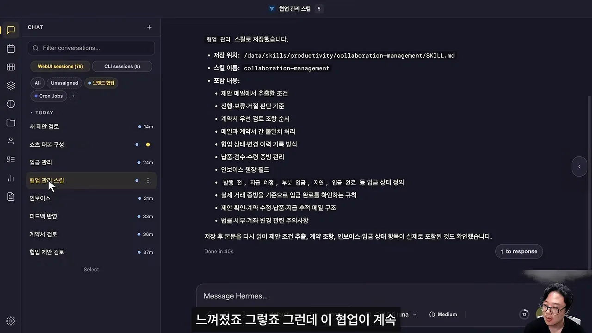
Skills 화면에서 저장된 스킬을 열면 Quick Reference 표가 있어요. 제안 접수, 수락 판단, 계약 검토, 진행 관리, 납품, 청구·입금 여섯 단계마다 핵심 산출물과 통과 기준이 적혀 있어요. 아래 Procedure 1번은 '원문을 그대로 옮기고, 추정하거나 좋은 의미로 보정하지 않는다'로 시작해요.
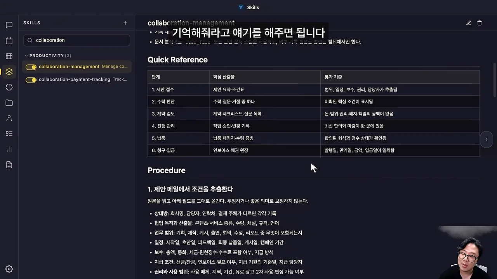
조건이 바뀌면 그때그때 "이렇게 바뀌었으니 기억해 줘"라고 하면 돼요. 다음 제안이 오면 같은 스킬을 불러 같은 흐름으로 시작해요. 발표자는 새 브랜드 E 제안 메일을 붙여 넣고 협업 관리 스킬로 정리하게 했어요. 결과에는 다음 액션과 막힌 조건, 추가로 확인할 항목이 정리되고, 협업 기록 파일을 다시 읽어 현재 입금 대기 3건도 함께 알려 줘요.
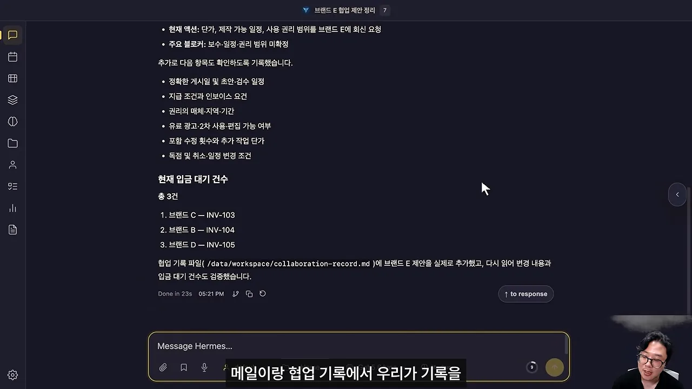
협업마다 다른 금액, 지급 기한, 실제 입금 상태는 메일과 협업 기록에서 그때그때 확인해요. 한 번 직접 겪어 본 과정을 스킬로 만들었으니, 매번 처음부터 다시 설명할 필요가 없어요.